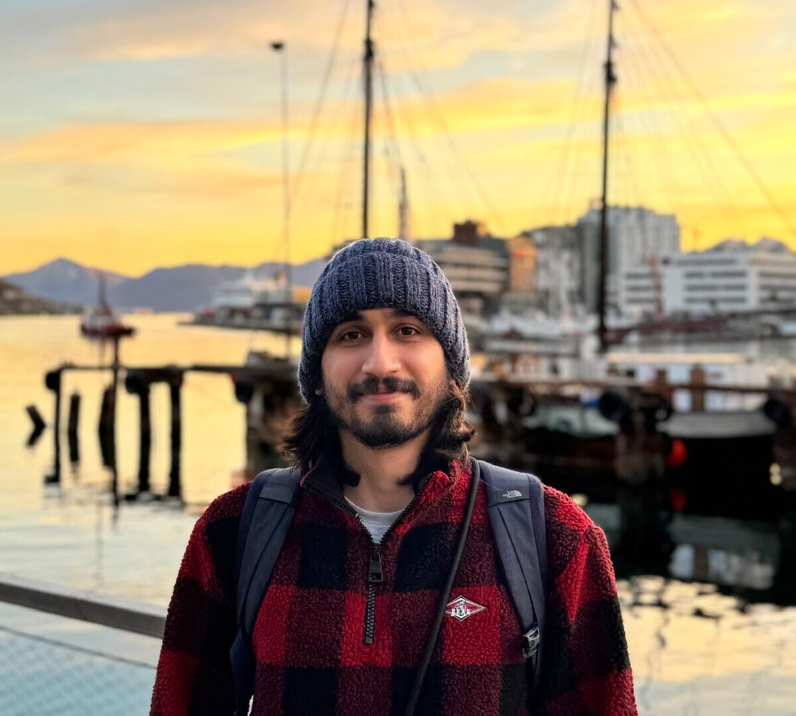
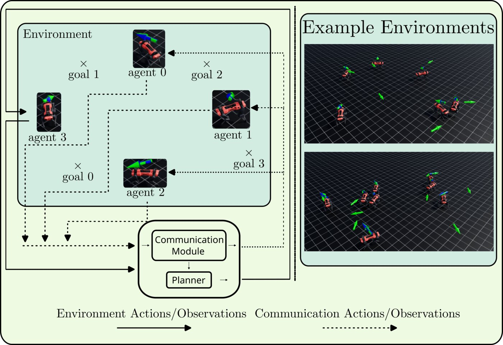

Volkan Ün
Deutsche Telekom Chair of Communication Networks, TU Dresden
About Me
I am a researcher at TU Dresden working on robot learning. My research focuses on multi-agent reinforcement learning with learned communication for multi-robot motion planning, and on spiking neural networks for event-based continuous control and quadruped locomotion.
Before moving into robotics, I worked as a research assistant applying machine learning to neuroimaging. I built statistical and machine learning models of brain structure to study psychological disorders, mainly anorexia nervosa, and developed a Python package for handling UK Biobank data. Earlier, as a machine learning developer, I worked on nerve segmentation in ultrasound images, generative models for data augmentation, and federated learning for privacy-preserving training.
I received an M.Sc. in Computational Modeling and Simulation from TU Dresden and a B.Sc. in Mathematics from Hacettepe University.
Outside of research, I enjoy photography, cycling and camping, and I like playing Go and Dungeons & Dragons.
Awards
- ETRI Best Paper Award, ISOCC (2026)
- Kaggle Silver Medal, RSNA Screening Mammography Breast Cancer Detection, 74 / 1687, top 5% (2023)
- Kaggle Silver Medal, Cassava Leaf Disease Classification, 95 / 3900, top 3% (2021)
Publications
-

SIIIEEE/SICE International Symposium on System Integration (SII), 2027. -
 ISOCC
International SoC Conference (ISOCC), 2026.Project Page ETRI Best Paper Award
ISOCC
International SoC Conference (ISOCC), 2026.Project Page ETRI Best Paper Award -
 SOCC
IEEE International System-on-Chip Conference (SOCC), 2026.
SOCC
IEEE International System-on-Chip Conference (SOCC), 2026.
Experience
- Researcher, Deutsche Telekom Chair of Communication Networks, TU Dresden (2024 – present)
- Research Assistant, Transdenlab, Dresden (2022 – 2023)
- Machine Learning Developer, SmartAlpha, Ankara (2021)
Education
- M.Sc. Computational Modeling and Simulation, TU Dresden (2021 – 2024)
Thesis: Reinforcement Learning Applied to Robotics to Automate Peg Transfer Surgical Training Task - B.Sc. Mathematics, Hacettepe University, Ankara (2015 – 2021)
Research Interests
- Multi-Robot Learning: multi-agent reinforcement learning, learned communication, motion planning
- Neuromorphic Control: spiking neural networks, event-based vision, legged locomotion
Powered by Jekyll and Minimal Light theme.